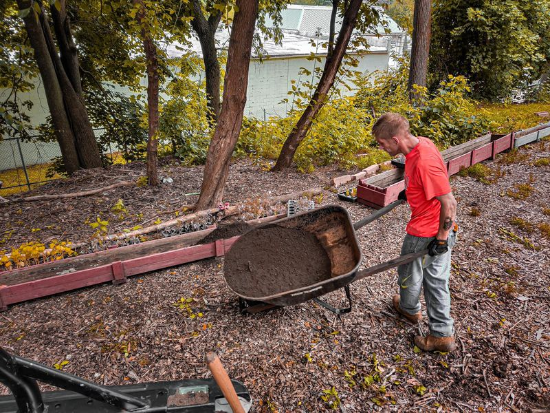

Mobile uploads
I woke up this morning feeling deep sorrow and sadness for our friend, Andrew.
Andrew died of a fentanyl overdose.
That alone is sad because we all know Andrew didn’t take fentanyl. He took meth.
So it will forever be a mystery as to what happened in those last moments. We all have our theories. But it hardly matters now. Andrew is dead and he is now just a number added to the pile of 100,000 people that will die this year from a fentanyl overdose.
I had the opportunity to speak with someone who knew Andrew growing up. His mother died in 2015. His father died when he was young. Andrew’s biological family was gone. That’s a very common theme in the homeless community. There was no one to call for help. And, as is the case in these situations, he burned bridges of other people through stealing and drug use. 
He was in and out of juvenile detention centers starting at 13. And then in and out of jail and prison once he became an adult.
He had dreams and hopes. They were always dashed.
Was it the drugs that caused him to see and hear things that weren’t really there? Was it mental illness? Or was it both? This is as much of a mystery as his death.
Andrew was in our first tent city. He didn’t get housed as he watched all of his friends get housed. I carried his belongings out into the woods that day.
I then opened this most recent camp. He and Rob were the first two people in that camp. I thought for a long time that maybe I’d just keep it those two people. Maybe I should have. Maybe Andrew would still be alive. But I now also have people who are thankful I let them move in. It’s an impossible situation. Every move is just another bad move in a nightmare situation.
Andrew was most certainly not alone. Though his biological family was gone, his street family was strong. Andrew was deeply loved by many, many people. He was passionate. He was funny. He was endlessly generous. I don’t know anyone who didn’t love Andrew.
Andrew now is dead. All his friends deeply feel this loss. It’s just so sad.
We always tell ourselves in situations like these, “I should have done more.” This is a universal response that I hear over and over again from myself and others. “I should have done more.”
That is always such a beautiful thing to hear. Tragically beautiful. It represents hope, and care, and eternal love.
I loved Andrew. I considered him my son. Just as I consider all these people under my care to be my sons and daughters. They desperately need a loving father figure. Not someone to judge them and push them. Just someone to love them and encourage them. A strong man with a strong sense between right and wrong. Someone to tell them that they can do this. That they are amazing people who will do amazing things with their lives.
I’m so sorry Andrew. I miss you so much. I had so many hopes and dreams for you. But at least you are at peace now. I’m happy for that.
I love you Andrew.